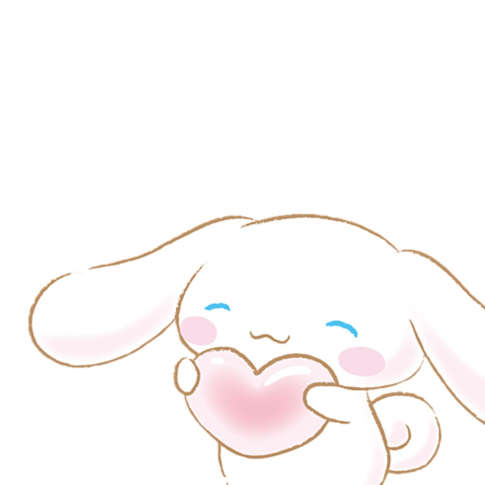
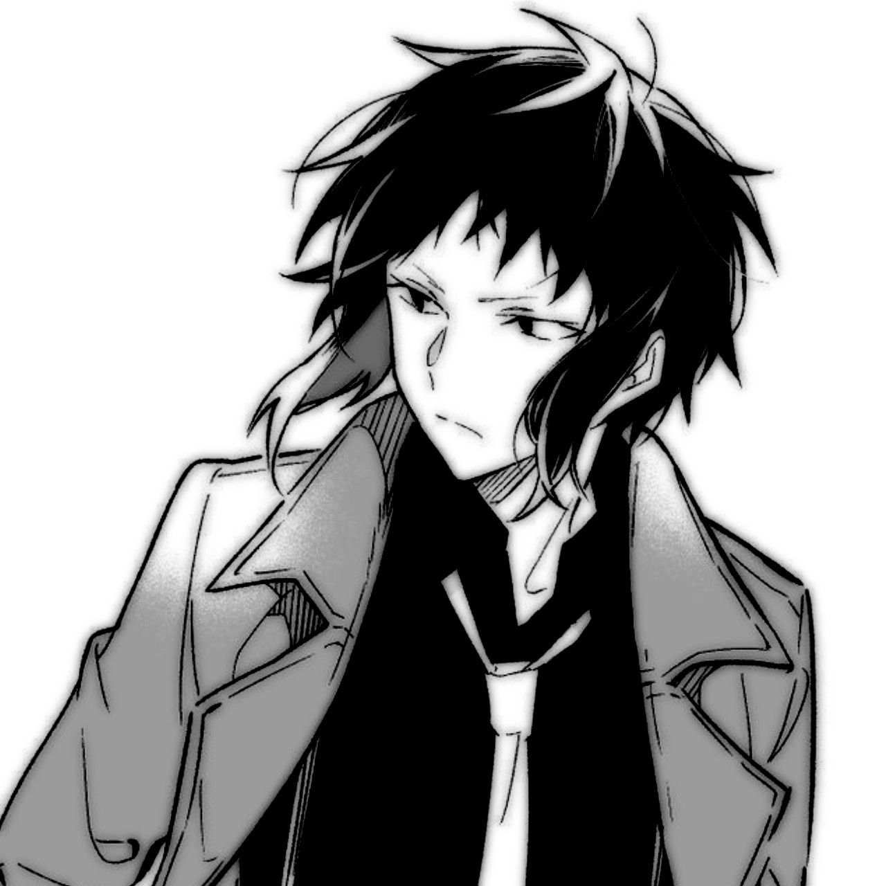

Primero que todo muchas gracias por aceptar mi invitación a esta fecha y ser mi Valentin hoy, se que no celebras estas fechas pero no pude dejar pasar el hecho de realizar por primera vez en años desde que nos conocemos un detalle para esta fecha bonita que es el Día del Amor y la Amistad. Este detalle lo hice con mucho amor y cariño para tí, quizas no sea la gran cosa pero espero te guste.
Hoy siendo un día especial quiero agradecerte por todas las cosas que me has enseñado y por el apoyo que a pesar de las cosas malas que han ocurrido aun sigues aquí a mi lado, brindándome de tu atención y cariño. Disculpa lo poco que te he dado, las decepciones que te has llevado y los males que he provocado en ti sin yo percatarme de aquellos. Eres una persona maravillo, hermosa, brillante, amorosa, esplendida, y a pesar de que digas que has cambiado la verdad siento que esas virtudes aún permanecen en tu corazón, sé que no es necesario un día en específico para dar amor, detalles y esas cosas, pero quise aprovechar este día porque necesitaba tiempo realizar esta página, ya que hacerlas lleva tiempo, conocimiento y paciencia, algo que en lo personal me falta jsjsjs, en estos días he estado full estudio para aprender a cómo usar muchas líneas de código de nuevas, que a pesar del tiempo que llevaba sin escribir código no he perdido mi conocimiento y he aprendido más, gracias por la motivación para estudiar más sobre esto, no puedo dejar de pensar en la palabra “Gracias” cuando se trata de ti, Estrellita, pero esto va desde mi alma al corazón y de mi corazón a estas letras… Gracias por seguir siendo la estrella que con su brillo y magnifica luz no me dejo caer en el vacío de la oscura noche<3
No podré ser este hombre tan guapo, bello, indomable, hermoso, perfecto.... Ay Dios Akutagawabb ¿Por qué eres tan hermoso? Te amo bb ajsdlakj que guapo.
Pero me gustaría ser el hombre que te haga feliz durante el día y la noche, y no dejarte caer de nuevo en un vacío oscuro donde no se haya la luz, quiero ser el pilar que pueda sostener tu estabilidad y en donde te puedas apoyar, no dudo al decir que mi alma te ama y mi corazón te desea, que donde se haga la oscuridad se cree la luz y donde haya desesperación se forme la esperanza… Es por eso que quiero preguntarte…
¿Aceptarias volver a ser la novia de esta pequeña luna sin luz?